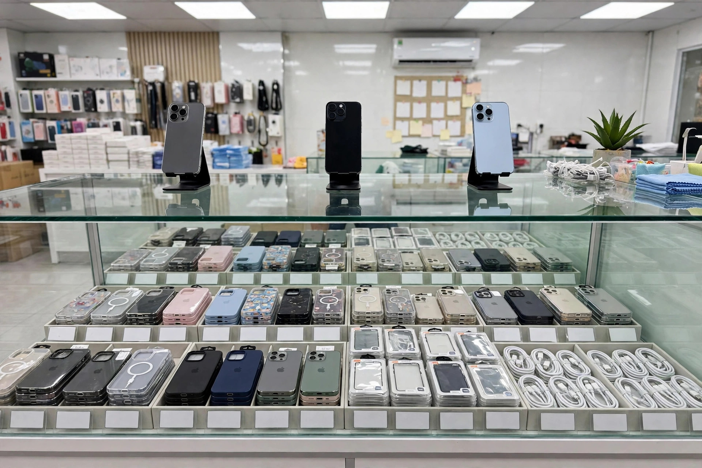

Website cho shop điện thoại cần có gì: tra giá theo phiên bản, ốp lưng đúng dòng máy, đặt hàng nhanh không cần chờ báo giá

Khách cầm điện thoại của mình, đứng trước tường ốp lưng đủ màu trong shop điện thoại buổi tối — khoảnh khắc mua sắm quen thuộc của khách mua phụ kiện, và là lý do website shop điện thoại phải cho đặt hàng đúng dòng máy trong vài lần chạm.
Tám rưỡi tối, điện thoại vừa rơi xuống nền gạch, ốp lưng nứt một đường dài. Khách mở fanpage shop bạn, thấy đúng mẫu ốp mình thích, nhắn tin: "Ốp này có cho iPhone 15 Pro Max không ạ, giá bao nhiêu ạ?" Bạn đang ăn cơm, tay còn bận, trả lời sau hai mươi phút thì tin nhắn đã trôi xuống dưới, khách thì đã lướt sang chỗ khác. Sáng hôm sau bạn mới trả lời: "Dạ có ạ, shop còn hàng ạ" — nhưng khách không còn nhớ mình định mua gì nữa, đơn hàng thì chưa bao giờ được đặt.
Chủ shop điện thoại nào cũng quen cảnh này — không phải vì khách không muốn mua, mà vì shop bắt một người đang cần gấp một món phụ kiện nhỏ phải nhắn tin, chờ đợi rồi mới mua được. Ngay dưới đây, mình sẽ cùng bạn bóc tách vì sao cách làm hiện tại của phần lớn shop điện thoại đang làm mất đơn, những mục một website cho shop điện thoại thực sự cần có, và cách bạn tự kiểm tra trước khi bỏ tiền làm web.
Vì sao shop điện thoại đông khách vẫn mất đơn: ba lỗi quen thuộc
Lỗi thứ nhất là giá ghi chung chung, không ghi theo phiên bản và bộ nhớ. Một mẫu máy có ba, bốn phiên bản bộ nhớ — 128 GB, 256 GB, 512 GB — giá chênh nhau vài triệu đồng, vậy mà trên fanpage hay trang bán hàng của nhiều shop chỉ ghi một con số chung, hoặc ghi "inbox để biết giá". Khách không biết đúng bản mình cần có giá bao nhiêu, lại phải nhắn hỏi, mà nhắn hỏi thì phải chờ. Với phụ kiện cũng vậy: ốp "cho iPhone 15" nhưng iPhone 15, 15 Plus, 15 Pro và 15 Pro Max khác nhau kích thước và cụm camera, một chữ "iPhone 15" chung chung không nói được mẫu ốp đó vừa với máy nào. Khách không dám đoán, khách nhắn hỏi, mà nhắn hỏi thì đơn hàng lại phụ thuộc vào việc bạn có đang cầm điện thoại trả lời hay không.
Lỗi thứ hai là phụ kiện không ghi rõ tương thích với dòng máy nào. Ốp iPhone 14 không lắp vừa iPhone 15 vì cụm camera to hơn, sạc 20 W sạc chậm hơn hẳn sạc 65 W, cáp Lightning không cắm được máy đã chuyển sang USB-C — những khác biệt này khách mua online không tự nhìn ra được qua một tấm ảnh. Khi web chỉ đăng ảnh ốp, ảnh sạc mà không ghi rõ "dùng cho dòng máy nào, công suất bao nhiêu, đầu cắm gì", khách mua về dùng không được thì phải đổi trả, bạn mất tiền ship hai chiều, khách mất niềm tin. Với shop điện thoại, một dòng ghi tương thích sai còn tốn kém hơn một tấm ảnh xấu, vì đổi trả phụ kiện rẻ tiền mà mất cả khách quen mua máy.
Lỗi thứ ba là đặt hàng phải nhắn tin chờ báo giá. Khách mua phụ kiện quyết định trong vài giây: ốp vừa máy, giá vừa túi, bấm mua là xong. Một quy trình đặt hàng bắt khách phải nhắn tin, chờ shop báo giá, xác nhận còn hàng, xác nhận ship rồi mới chuyển khoản là một quy trình được thiết kế cho người rảnh — mà khách mua ốp lưng, mua sạc dự phòng thì không rảnh, họ mua trong lúc chờ xe, lúc giải lao, lúc điện thoại vừa vỡ ốp. Mỗi bước chờ đợi là một cơ hội để khách quên mất mình định mua gì, hoặc mua luôn ở chỗ khác chỉ vì chỗ đó cho đặt hàng ngay. Đơn hàng của shop điện thoại không mất vì khách chê giá, mà mất vì khách không kịp mua xong.
7 mục một website shop điện thoại thực sự cần có
Một website cho shop điện thoại không cần nhiều trang, càng không cần hiệu ứng cầu kỳ. Nó cần đúng những mục dưới đây — mỗi mục giải quyết một câu hỏi cụ thể mà khách luôn hỏi trước khi bấm đặt hàng.
1. Bảng giá theo phiên bản và bộ nhớ — tra ngay dưới mỗi máy
Đây là mục quan trọng nhất với shop điện thoại, vì cùng một mẫu máy mà giá chênh nhau theo bộ nhớ là chuyện khách nào cũng tính trước. Bảng giá phải nằm ngay dưới tên máy, khách không phải nhắn hỏi: iPhone 15 Pro Max 256 GB giá bao nhiêu, 512 GB giá bao nhiêu, máy mới và máy lướt chênh nhau thế nào — ghi rõ từng dòng một. Nút chọn phiên bản nằm ngay dưới giá, chạm một ngón tay là chọn xong bản 256 GB hay 512 GB, giá tự nhảy theo đúng bản đã chọn. Với phụ kiện cũng vậy: ốp cho iPhone 15 Pro Max ghi đúng giá của đúng dòng máy đó, không ghi một giá chung cho cả bốn phiên bản. Bảng này cũng là thứ giúp bạn giảm hẳn tin nhắn "máy này bản 256 giá sao anh ơi" — vì khách tự tra được trong vài giây, lúc nửa đêm, không cần chờ bạn trả lời.
2. Bộ lọc theo dòng máy — chọn máy trước, chỉ hiện phụ kiện vừa máy đó
Khách vào web của bạn thường đã biết mình dùng máy gì, nên web phải cho họ chọn máy trước rồi mới hiện phụ kiện: chọn hãng, chọn dòng máy — ví dụ iPhone 15 Pro Max — rồi toàn bộ ốp lưng, kính cường lực, sạc, cáp hiện ra đều là hàng vừa đúng máy đó, không lẫn ốp của máy khác. Một bộ lọc làm đúng sẽ loại bỏ gần như toàn bộ lỗi mua nhầm: khách không phải tự đối chiếu kích thước, không phải nhắn hỏi "ốp này vừa máy em không", và bạn cũng không phải xử lý đổi trả vì khách mua nhầm dòng máy. Bộ lọc càng nằm gần đầu trang càng tốt, ngay dưới thanh tìm kiếm, để khách chạm hai lần là tới đúng kệ hàng của máy mình.
3. Ảnh thật và thông số kỹ thuật rõ ràng — ốp dày bao nhiêu, sạc bao nhiêu W, cáp đầu gì
Mỗi sản phẩm cần ảnh chụp thật của chính món đồ bạn bán: mặt trước, mặt sau, cận cụm camera trên ốp, cận đầu cáp và cổng sạc. Kèm theo đó là thông số ngắn gọn mà đủ ý: ốp làm bằng chất liệu gì, dày bao nhiêu, có nam châm hỗ trợ sạc không dây không, viền có cao hơn camera không; sạc công suất bao nhiêu W, hỗ trợ sạc nhanh chuẩn nào; cáp dài bao nhiêu, đầu Lightning hay USB-C, bọc dù hay bọc nhựa. Với máy đã qua sử dụng, ghi rõ tình trạng pin còn bao nhiêu phần trăm, ngoại hình có xước ở đâu, đã thay linh kiện nào chưa — khách đọc một lượt là hình dung được món đồ cầm trên tay sẽ như thế nào, và đó chính là thứ khiến họ bấm đặt hàng thay vì nhắn hỏi thêm. Ảnh thật kèm thông số thật còn có một tác dụng khác: khi hàng giao tới tay giống hệt những gì web đã ghi, khách tin shop, và lần sau họ mua máy cũng quay lại chỗ bạn.
4. Giỏ hàng và đặt hàng COD — khách đặt xong trong 3 lần chạm
Khách mua phụ kiện thường mua trong những khoảng thời gian vụn vặt: lúc chờ xe, lúc giải lao, lúc điện thoại vừa vỡ ốp. Quy trình đặt hàng vì vậy phải ngắn nhất có thể: chọn đúng dòng máy, bấm "đặt hàng", điền tên, số điện thoại và địa chỉ là xong — ba lần chạm, không cần tạo tài khoản, không cần chuyển khoản trước. Khách nhận hàng mới trả tiền (COD) đúng thói quen mua bán quen thuộc, không phải lăn tăn chuyển khoản cho một shop lạ vì một chiếc ốp vài trăm nghìn. Form đặt hàng càng ít ô càng tốt: bỏ bớt những trường không cần thiết, để lại đúng những gì bạn cần để giao hàng. Một đơn phụ kiện được đặt xong trong lúc khách còn đang rảnh tay là một đơn hàng bạn đã giữ được.
5. Combo máy kèm phụ kiện — mua máy là đủ bộ dùng ngay, khỏi chọn lẻ từng món
Khách mua máy mới thường cần luôn ốp, kính cường lực và sạc, nhưng nếu phải tự tìm lẻ từng món thì họ dễ bỏ sót, hoặc mua nhầm dòng máy. Mục combo giải quyết đúng nỗi lúng túng đó: mua iPhone 15 Pro Max kèm ốp chống sốc, kính cường lực và sạc nhanh 20 W trong một gói; mua Samsung kèm ốp và cáp USB-C trong một gói. Ghi rõ trong mỗi combo gồm những gì, dùng cho đúng dòng máy nào, tổng giá bao nhiêu và tiết kiệm hơn mua lẻ bao nhiêu — khách nhìn một bảng là quyết định được ngay, không cần nhắn hỏi "mua máy này thì cần thêm gì nữa anh". Bạn cũng bán được nhiều món hơn trong một đơn, mà khách thì cầm máy về là dùng được ngay, không phải chạy đi mua thêm.
6. Bảo hành và đổi trả ghi rõ ngay trang sản phẩm — máy bảo hành bao lâu, phụ kiện lỗi đổi trong mấy ngày
Điện thoại và phụ kiện là mặt hàng khách lo nhất về chuyện lỗi, hỏng sau khi mua, nên chính sách bảo hành và đổi trả phải nằm ngay dưới nút đặt hàng, không giấu trong một trang riêng khó tìm: máy bảo hành bao nhiêu tháng, bảo hành những lỗi gì; ốp, sạc, cáp lỗi đổi mới trong bao nhiêu ngày nếu còn nguyên vẹn; kính cường lực dán lỗi có được dán lại không. Ghi rõ điều kiện ngay từ đầu — hàng đã qua sử dụng thì đổi theo điều kiện nào, phụ kiện đã bóc seal thì sao — để khách không phải hỏi lại và bạn không phải giải thích lại từng người. Một chính sách bảo hành rõ ràng làm được điều mà ảnh đẹp không làm được: khiến khách dám bấm mua ngay cả khi họ chưa từng mua ở shop bạn bao giờ.
7. Đánh giá của khách đã mua — ghi rõ mua máy nào, dùng bao lâu, pin còn bao nhiêu
Với shop điện thoại, đánh giá có giá trị nhất không phải là "shop uy tín lắm ạ" mà là những dòng ghi rõ thông tin thật: "mình mua iPhone 13 Pro Max 256 GB bản lướt, pin còn 89%, dùng 3 tháng chưa lỗi gì", "sạc 20 W này sạc iPhone 15 Pro từ 20% lên 80% trong khoảng nửa tiếng", "ốp vừa khít máy, viền cao hơn camera nên để úp xuống bàn không xước kính". Mục này cần tên thật của khách, dòng máy đã mua, thời gian đã dùng và cảm nhận cụ thể — kèm được ảnh thật máy khách đang dùng thì càng tốt, với sự đồng ý của khách. Năm đến bảy đánh giá như vậy, đặt ngay dưới bảng giá, có tác dụng hơn cả một trang giới thiệu dài: khách đang phân vân giữa hai phiên bản sẽ đối chiếu máy của mình với máy trong đánh giá và tự tin bấm mua, thay vì nhắn hỏi bạn rồi chờ trả lời.
👉 Xem thư viện mẫu web theo ngành nghề tại Web Khởi Nguồn
Ốp lưng, kính cường lực và cáp sạc xếp theo từng dòng máy, nhãn trống để ghi tên máy — cách trưng bày này trên website giúp khách chọn đúng phụ kiện cho máy mình ngay lần đầu.
Khách mua máy và khách mua phụ kiện dùng website của shop theo hai cách hoàn toàn khác nhau
Khách mua máy — người đang cân nhắc bỏ ra mười mấy triệu cho một chiếc điện thoại — vào web của bạn với tâm thế dò xét. Họ so sánh từng phiên bản bộ nhớ, đọc kỹ tình trạng pin và ngoại hình của máy lướt, soi chính sách bảo hành và đọc đánh giá của người đã mua máy đó trước khi quyết định. Với nhóm này, bảng giá theo phiên bản, ảnh thật kèm tình trạng máy, chính sách bảo hành rõ ràng và đánh giá ghi rõ dòng máy là bốn thứ quan trọng nhất; thiếu một trong bốn, họ sẽ sang shop khác. Khách mua máy cũng là nhóm hay hỏi nhất, nên nút gọi và Zalo nổi phải luôn trong tầm tay họ — trả lời nhanh một câu hỏi về pin lúc tối muộn có thể là khởi đầu của một khách quen mua máy cho cả nhà.
Khách mua phụ kiện — người chỉ cần một chiếc ốp vừa máy, một sợi cáp đúng đầu cắm — lại dùng web với một mục đích rất thực dụng: vào, chọn đúng dòng máy, thấy giá, đặt xong trong một phút rồi tắt đi. Với nhóm này, bộ lọc theo dòng máy, giá ghi rõ theo đúng máy, giỏ hàng đặt nhanh và combo máy kèm phụ kiện là quan trọng nhất; họ không cần đọc dài, không cần tư vấn nhiều, và cũng là nhóm quay lại thường xuyên nhất — mỗi lần đổi ốp, hỏng cáp, cần thêm sạc dự phòng là một lần họ mở lại web của bạn. Hiểu hai hành vi này, bạn sẽ biết vì sao website shop điện thoại phải vừa có đủ bảng giá theo phiên bản, ảnh thật, bảo hành rõ ràng cho khách mua máy, vừa có bộ lọc dòng máy và đặt hàng nhanh cho khách mua phụ kiện — thiếu một phía là mất một nửa cơ hội.
Gói website trọn gói 586.000đ tại Web Khởi Nguồn gồm những gì cho shop điện thoại?
Nghe giá 586.000đ, nhiều chủ shop nghi ngờ ngay: rẻ vậy thì web làm ra chắc chỉ để "cho có", được vài hôm lại lỗi. Nghi ngờ đó có cơ sở nếu giá rẻ đến từ việc cắt xén tính năng. Còn ở đây, giá thấp đến từ cách làm: shop nhỏ chỉ cần 1 đến 5 trang đúng nhu cầu, cấu trúc trang cho cửa hàng bán hàng đã được đóng gói thành quy trình chuẩn, đội ngũ không phải ngồi lập trình lại từ con số không cho từng khách, nên chi phí dồn vào đúng phần nội dung và giao diện riêng của shop bạn. Bạn có thể xem chi tiết tại bảng giá và mục gói 586.000đ gồm những gì trên trang chủ.
Cụ thể với một shop điện thoại, gói bàn giao gồm: website 1–5 trang theo yêu cầu (trang giới thiệu shop, trang sản phẩm với bảng giá theo phiên bản và bộ nhớ, trang phụ kiện lọc theo dòng máy, trang liên hệ — bố cục theo đúng ngành điện thoại và màu sắc thương hiệu của shop); chuẩn mobile tuyệt đối vì phần lớn khách xem bằng điện thoại; tên miền năm đầu, hosting và chứng chỉ bảo mật SSL đã gồm sẵn trong giá; giỏ hàng và đặt hàng COD để khách đặt xong trong vài lần chạm, nhận hàng mới trả tiền; form liên hệ và form đặt hàng thu thông tin khách; cụm nút gọi — Zalo — bản đồ nổi một chạm để khách hỏi nhanh "máy này còn hàng không" và tìm đường tới shop. Web dựng xong trong 1–3 ngày, kèm hướng dẫn sử dụng chi tiết từ A–Z để bạn tự thêm máy mới, tự sửa giá theo phiên bản, đăng phụ kiện mới mỗi tuần mà không cần biết kỹ thuật, và bảo hành kỹ thuật trọn đời. Chính sách làm thử trước, hài lòng mới thanh toán, không cần đặt cọc — bạn xem trước bản dựng của chính shop mình rồi mới quyết định. Khi shop mở thêm chi nhánh hay cần bán hàng bài bản hơn, bạn có thể nâng cấp lên gói website cao cấp mà không phải làm lại từ đầu.
Cách tự kiểm tra một website shop điện thoại trước khi quyết định làm
Dù bạn làm web ở đâu, hãy tự kiểm tra bằng trải nghiệm của chính khách hàng, với bốn bước đơn giản sau. Bước một: lấy điện thoại của bạn, bật 4G, đóng vai một khách đang cần mua ốp cho iPhone 15 Pro Max. Đếm số lần chạm từ lúc trang mở tới lúc bạn đặt xong đơn — nếu phải qua quá 4 đến 5 lần chạm, hoặc phải nhắn tin hỏi giá và hỏi còn hàng thì mới mua được, trang đó đang làm mất đơn mỗi ngày. Bước hai: thử tra giá theo phiên bản — tìm một mẫu máy, xem bảng giá có đủ các bản 128 GB, 256 GB, 512 GB không, và bộ lọc phụ kiện có chỉ hiện hàng vừa đúng dòng máy bạn chọn không. Bước ba: thử tự thêm một sản phẩm mới và sửa giá một phiên bản, xem thao tác mất bao lâu; nếu phải nhắn nhờ người khác làm hộ, về lâu dài giá trên web sẽ lại thành giá cũ, và bạn quay về đúng lỗi thứ nhất ở đầu bài. Bước bốn: bấm thử nút gọi và nút Zalo ngay trên trang, xem có ra đúng số của shop không; gửi thử một đơn hàng qua giỏ hàng COD, xem thông tin có tới tay bạn đầy đủ tên, số điện thoại, địa chỉ, sản phẩm và đúng dòng máy khách đã chọn không; mở lại trang bằng 4G vào đúng giờ cao điểm tối, mạng yếu, xem trang và ảnh sản phẩm có hiện nhanh không — khách của bạn cũng đang mở trang trong đúng điều kiện như vậy, thường là lúc họ vừa cần mua gấp một món phụ kiện.
Quay lại cảnh tám rưỡi tối ở đầu bài: bạn không thể làm điện thoại của khách ngừng rơi vỡ, nhưng bạn có thể khiến một người đang cần gấp một chiếc ốp mua được đúng mẫu vừa máy mình trong vài lần chạm, không cần chờ ai báo giá. Giá tra được theo đúng phiên bản, phụ kiện lọc được theo đúng dòng máy, đơn hàng tự đặt được và nhận hàng mới trả tiền — lúc đó tin nhắn còn lại chỉ là "anh ơi ốp vừa khít máy em luôn, cho em đặt thêm cái sạc dự phòng nhé", đúng kiểu tin nhắn mà chủ shop điện thoại nào cũng muốn nhận. Nếu bạn đang cân nhắc làm website cho shop của mình, cứ xem trước các mẫu theo ngành nghề, đối chiếu với bảy mục trong bài này, rồi quyết định cũng chưa muộn.
Muốn shop của bạn có website như vậy?
Xem trước các mẫu demo theo ngành nghề, ưng mẫu nào làm mẫu đó — trọn gói 586.000đ, xem mẫu trước khi quyết định.